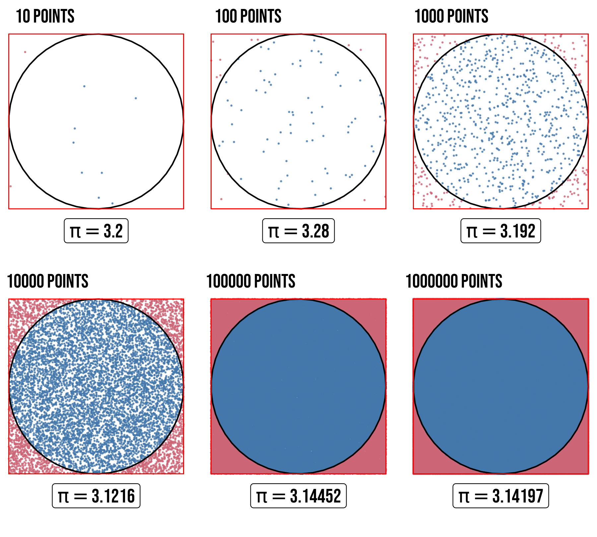

Problem 2
Estimating π using Monte Carlo Methods
Motivation
Monte Carlo methods are computational algorithms that rely on random sampling to estimate numerical results. One of the most intuitive applications is estimating the value of π using geometric probability. This approach demonstrates how randomness can be harnessed to solve deterministic problems, providing insights into probability, geometry, and numerical convergence.
Two classic Monte Carlo methods for estimating π are:
-
Circle-based method: Dropping random points inside a square and counting those that fall within an inscribed circle.
-
Buffon’s Needle method: Randomly dropping needles on a lined surface and using the probability of crossings to estimate π.
These methods not only offer a visual and interactive way to approximate π but also serve as an introduction to stochastic simulations in computational mathematics.
Part 1: Estimating π Using a Circle
1. Theoretical Foundation
Consider a unit circle (radius = 1) inscribed inside a square with side length 2.
- Area of the circle = \(πr² = π(1)² = π\)
- Area of the square = \(side² = 2² = 4\)
If we randomly scatter points inside the square, the probability that a point lands inside the circle is:
Rearranging, we get:
2. Simulation
-
Generate random \((x, y)\) points in the range \([-1, 1] × [-1, 1]\).
-
Check if each point satisfies \(x^2 + y^2 \leq 1\) (inside the circle).
-
Estimate π using the ratio of points inside the circle to the total points.
3. Visualization

4. Analysis
-
Convergence: The estimate improves with more points, but the error decreases slowly (~1/√N).
-
Computational Considerations: Large N improves accuracy but increases runtime.
Part 2: Estimating π Using Buffon’s Needle
1. Theoretical Foundation
Buffon’s Needle involves dropping a needle of length \(L\) on a plane with parallel lines spaced distance \(D\) apart.
- If \(L \leq D\), the probability \(P\) of the needle crossing a line is:
- Solving for π:
\(\(\pi \approx \frac{2L \times \text{Total throws}}{D \times \text{Number of crossings}}\)\)
2. Simulation
- Simulate random needle drops with random position and angle.
- Check if the needle crosses any of the parallel lines.
- Estimate π using the derived formula.
3. Visualization
A plot can show: - The parallel lines. - Needles colored differently based on whether they cross a line.
4. Analysis
- Convergence: Slower than the circle method (~1/N).
- Comparison: The circle method is more efficient for the same number of iterations.
Conclusion
Monte Carlo methods provide an engaging way to estimate π using randomness. While the circle method converges faster, Buffon’s Needle offers historical and geometric insights. Both methods illustrate the power of probabilistic simulations in numerical computation.